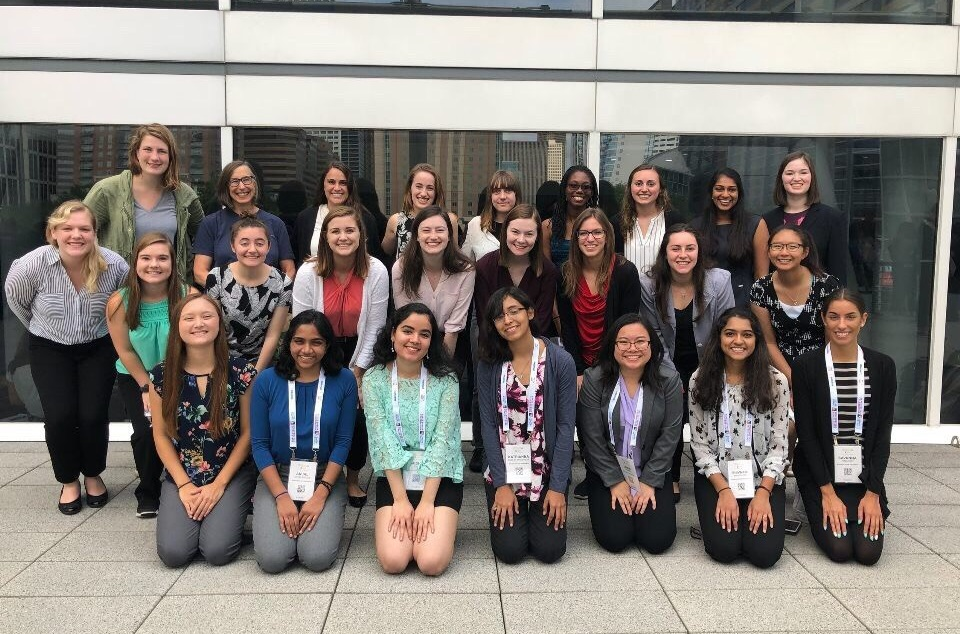

September 30, 2018
Howdy, World! I’m Sasha, the Vice President of Women in Computing for this school year. As we wrap up an exciting week in Houston, for the 2018 Grace Hopper Celebration of Women in Computing, I wanted to take some time to reflect on the impact that this conference had on 25 women from MSU WIC. The attendees from Michigan State had the opportunity to network with 22,000 women and allies, and hear from influential speakers such as Megan Smith, Priscilla Chan, Anita Hill, and many more. The conference’s 2018 theme was ‘We Are Here,’ but it was clear that the messages we received would resonate long after we left. As you read other MSU attendees’ recaps of this amazing event in the coming weeks, I encourage you to take their learnings and see how you can apply them to your life, as we will to ours. The experience that I had has made me very thankful to be part of MSU WIC, an organization that - with the help of our gracious sponsors, was able to sponsor our attendance at GHC.
One of the countless great opportunities available at the Grace Hopper Celebration was the chance to choose from over 300 speaker and breakout sessions to attend; we heard from speakers touching on important issues and experiences that women in tech face on a daily basis. One of my personal favorites from this week was ‘Changing the Language in the D&I Space,’ where I was able to listen to a panel of four women personally affected by inadequate accommodations and disrespectful labeling, and learn how we as allies can improve our language, to boost their experience in the industry. Other attendees from MSU told me some of the most inspirational messages that they took out of their experience: to be yourself, to keep your eyes on the stars and your feet on the ground, and that a woman’s job is whatever she chooses.
Students from MSU also had the opportunity to network with a combination of 400 graduate schools and companies that were showing off the diversity at their organizations. Whether waiting in line to talk to one of the big four, chatting with engineers from one of the smaller start-ups in attendance, or learning about higher-education opportunities, students were able to learn what they could use their MSU education for, in the future. Additionally, a few students were selected to interview with companies at the conference, thus jump-starting their job search for this school-year. While at the expo, I made sure to check out Michigan State University’s booth, hosted by our wonderful advisors - Dr. Dillon and Dr. Anderson; the green and white booth provided a variety of information about our graduate programs and research opportunities.
Overall, I would just like to express my gratitude to everyone who made it possible for WIC to help 25 women spend this week developing themselves professionally. I know that what we learned this week will make a tremendous impact on our members and each of our futures. I would like to close by passing on a few memorable pieces of the advice that we learned at the conference: be confident in yourself, create groundbreaking ideas, and help change the game.